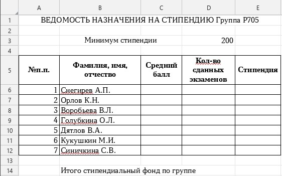

Практическая работа №3
Решение задач с применением логических функций в табличном процессоре «МойОфис Таблица»
1 Цель работы:
1.1 Приобрести умение осуществлять вычисления в электронных таблицах MS Excel с применением логических функций.
2 Основное оборудование:
2.1 ПЭВМ.
3 Подготовка к работе:
3.1 Подготовить бланк отчета.
4 Задание:
4.1 По данным экзаменационной ведомости, представленной на рисунке 1:
- рассчитать количество оценок (отлично, хорошо, удовлетворительно, неудовлетворительно), неявок, полученных в данной группе;
- рассчитать общее количество полученных оценок;
- вычислить средний балл по результатам сдачи экзаменов для каждого студента;
- используя минимальное значение стипендии и учитывая, что, вычислить размер стипендии по условию:
если все экзамены сданы на положительные оценки и средний балл не менее 4,5 , выплачивается 50%-ная надбавка к минимальной стипендии;
если все экзамены сданы на положительные оценки и средний балл менее 4,5, выплачивается минимальная стипендия;
в остальных случаях стипендия не выплачивается;
- подсчитать сумму стипендиального фонда для всей группы.
5 Порядок выполнения работы:
5.1 Запустить МойОфис Таблица.
5.2 Сохранить рабочую книгу под именем «Практическая работа №3».
5.3 Переименовать текущий лист в «Экзамен 1».
5.4 Оформить таблицу согласно рисунку 1.
Рисунок 1 – Экзаменационная ведомость
5.5 В ячейки F6-F12 ввести формулы, используя функцию ЕСЛИ. Если студент имеет оценку «5», то в соответствующей ему ячейке столбца F должно выводиться значение 1, иначе – значение 0.
5.6 Аналогично ввести формулы в остальные ячейки диапазона G6 : J12.
5.7 Определить имена блоков ячеек по каждому дополнительному столбцу. Например, для столбца F:
- выделить все значения дополнительного столбца F6: F12;
- в контекстном меню выполнить команду «Задать имя…»;
- в диалоговом окне в строке «Имя» ввести слово ОТЛИЧНО», в строке «Область» - Экзамен 1;
- в строке «Ссылка» должен быть указан диапазон =Экзамен 1!$F$6:$F$12;
- нажать «Ок».
5.8 Аналогично создать имена блоков ячеек: ХОРОШО, УДОВЛЕТВОРИТЕЛЬНО, НЕУДОВЛЕТВОРИТЕЛЬНО, НЕЯВКА.
5.9 Выделить столбцы F - J целиком и сделать их скрытыми. Для этого:
- установить курсор на названии столбцов и выделить столбцы F – J;
- выполнить команду «Скрыть столбец» из контекстного меню.
5.10 Ввести формулы подсчета суммарного количества полученных оценок определенного вида, используя имена блоков ячеек.
5.11 Подсчитать общее количество (ИТОГО) всех полученных оценок.
5.12 Скопировать два раза текущий лист «Экзамен 1». Для этого:
- установить курсор на имени текущего листа и вызвать контекстное меню;
- выполнить команду «Дублировать»;
5.13 Переименовать полученные листы в «Экзамен 2» и «Экзамен 3».
5.14 Изменить данные на листах «Экзамен 2» и «Экзамен 3»: ввести названия других дисциплин, полученные оценки за экзамен или отметить неявку на экзамен (н/я).
5.15 Просмотреть имена блоков ячеек, действующие в рабочей книге с помощью команды «Диспетчер имен» в правой части окна, нажав на кнопку .
5.16 Создать новый лист «Стипендия», на который из столбцов А и В листа «Экзамен 1» скопировать фамилии и порядковые номера студентов.
5.17 Оформить ведомость назначения на стипендию согласно рисунку 2.

Рисунок 2 – Ведомость назначения на стипендию
5.18 Вычислить средний балл по результатам сдачи экзаменов для каждого студента.
5.19 Вычислить количество сданных каждым студентом экзаменов с учетом неявок с помощью функции СЧЕТ. Например, для ячейки D6 формула следующая:
=СЧЕТ(‘Экзамен 1’!D6;’Экзамен 2’!D6;’Экзамен 3’!D6)
5.20 Ввести формулу для вычисления размера стипендии студента в ячейку Е6. Эта формула должна иметь следующий вид:
=ЕСЛИ(D6=3; ЕСЛИ(И('Экзамен1'!D6<>2;'Экзамен2'!D6<>2;'Экзамен3'!D6<>2);
ЕСЛИ(C6>=4,5; $D$3*1,5; $D$3); 0); 0)
5.21 Скопировать формулу по всем ячейкам столбца E.
5.22 Подсчитать сумму стипендиального фонда для всей группы.
5.23 Проверить работоспособность таблицы:
- ввести другие оценки в экзаменационные ведомости;
- изменить минимальный размер стипендии.
6 Содержание отчета:
6.1 Титульный лист;
6.2 Цель работы;
6.3 Ответы на контрольные вопросы.
7 Контрольные вопросы:
7.1 Какой синтаксис имеет функция ЕСЛИ?
7.2 Какие еще логические функции были использованы в работе? Какой они имеют синтаксис?
7.3 Как назначить ячейке имя?
7.4 Какие преимущества дает использование имен в МойОфис Таблица?
7.5 Как записывается в формуле адрес ячейки, расположенной на другом рабочем листе?
7.6 Какой результат возвращает функция СЧЕТ? Ее синтаксис?